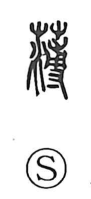

薄

Uncategorized
Kun: usui, usumeru, usumaru, usuragu, usureru, iyashimu | On: haku
thin ・ few ・ scant ・ base ・ to despise ・ to approach
Explanation
薄 is a phono-semantic character built with 溥 as its phonetic. The inner graph 尃 shows a hand setting a seedling to cover its roots, and in bronze inscriptions it appears in expressions like 尃命, conveying the act of spreading or promulgating commands and, by extension, letting things extend widely. Hence 溥 carries the sense of breadth and amplitude. With this as its phonetic base, 薄 came to mean “thin,” as in the Book of Odes line “as if treading on thin ice” (如履薄冰). By extension it can also denote “few, scant,” “base or paltry,” “to despise,” and is at times used with the sense “to approach,” standing in for 迫.